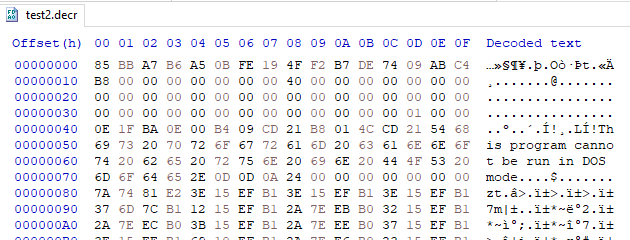

# CryptoAPI
Microsoft's CryptoAPI is crap to use.
There's so much stuff and so many acronyms and so few clear-cut answers.
Links•
https://www.drdobbs.com/encrypting-and-decrypting-data-with-the/184416394?pgno=1 - Good intro
•
https://www.blueliv.com/cyber-security-and-cyber-threat-intelligence-blog-blueliv/research/cryptoapi-in-malware/•
https://github.com/wyrover/CryptoAPI-examples•
https://www.youtube.com/watch?v=5iCekhs4hMo - Dumping a CryptoAPI Keygen
•
https://www.youtube.com/watch?v=LpBlAr2jPM8 - Reversing a CryptoAPI
MSDN Links•
https://docs.microsoft.com/en-us/windows/win32/seccrypto/encrypting-and-decrypting•
https://docs.microsoft.com/en-us/windows/win32/seccrypto/example-c-program-setting-and-getting-session-key-parameters•
https://docs.microsoft.com/en-gb/windows/win32/seccrypto/example-c-program-encrypting-a-file?redirectedfrom=MSDN - Crypting files
## About the Windows CryptoAPI
•
https://www.drdobbs.com/encrypting-and-decrypting-data-with-the/184416394?pgno=1 - Good intro
### Cryptographic Service Providers (CSPs) and Provider Types
Microsoft offer a series of CSPs - Cryptographic Service Providers.
Each provider offersa provider type.
Each provider type offers different key exchange/signature/encryption/hashing functionality.
Cryptographic Service Providers:
•
https://docs.microsoft.com/en-us/windows/win32/seccrypto/microsoft-cryptographic-service-providersProvider types:
•
https://docs.microsoft.com/en-us/windows/win32/seccrypto/cryptographic-provider-typesFOR EXAMPLE:
The
MS_DEF_PROV CSP
https://docs.microsoft.com/en-us/windows/win32/seccrypto/microsoft-base-cryptographic-provideroffers the provider type
PROV_RSA_FULLhttps://docs.microsoft.com/en-us/windows/win32/seccrypto/prov-rsa-fullPROV_RSA_FULL supports:
• Key Exchange - RSA
• Signature - RSA
• Encryption - RC2, RC4
• Hashing - MD5, SHA
The
MS_ENH_RSA_AES_PROV CSP
https://docs.microsoft.com/en-us/windows/win32/seccrypto/microsoft-aes-cryptographic-provideroffers the provider type
PROV_RSA_AEShttps://docs.microsoft.com/en-us/windows/win32/seccrypto/prov-rsa-aesPROV_RSA_AES supports:
• Key Exchange - RSA
• Signature - RSA
• Encryption - RC2, RC4, AES
• Hashing - MD2, MD4, MD5, SHA-1, SHA-2 (SHA-256, SHA-384, and SHA-512)
You choose the CSP and provider type based on what encryption/hashing etc. that you want to do.
To choose a CSP and Provider Type, you use
CryptAcquireContextHow the CSPs are ImplementedThe CSPs are implemented as a series of DLLs that export functions for encryption, decryption, key generation, and key storage.
Each CSP provides a key database used to store keys.
Each user has a key container. This key container gets used by applications.
Applications can also create their own key containers.
Each user has 2 public/private key pairs:
• one for encrypting session keys (key exchange pair)
• one for creating digital signatures (signature pair)
## About Crypto (in general)
### Block Cipher vs Stream Cipher
#### Stream CiphersStream ciphers are ciphers which encrypt 1 byte at a time.
Examples:
• RC4
• Salsa20
• XOR
• etc.
https://en.wikipedia.org/wiki/Category:Stream_ciphersWhen encrypting using a stream cipher, the size of the encrypted text will be the same as the plaintext,
#### Block Ciphers (and padding)Block Ciphers encrypt data in blocks, which means that it encrypts data in chunks and encrypts each chunk individually.
The most common block cipher is AES.
In AES, the block size is 128 bits.
If the data you're encrypting doesn't reach 128bits, padding will be added to the end of the block to reach the required block size. This means the encrypted data is almost always larger than the original plaintext.
The Windows CryptoAPI handles padding for you automatically.
•
https://docs.microsoft.com/en-us/windows/win32/secgloss/p-gly (search for "padding")
(I have no idea what padding mode it uses)
YOU JUST HAVE TO MAKE SURE THERE'S ENOUGH ROOM IN YOUR ENCRYPTION BUFFER for padding to be added.
To do this, you can call
CryptEncrypt with
pbData set to NULL to "calculate the required size for the ciphertext". You can then resize or allocate a new buffer that will fit the ciphertext
/*
Run CryptEncrypt once to grab the length of the encrypted data.
On input, bytes_required provides the plaintext data length
On ouptut, it stores the ciphertext length
*/
bytes_required = plaintext_len;
b = CryptEncrypt(key, 0, TRUE, 0, NULL, &bytes_required, 0);
if (b == FALSE)
{
printf("- Failed to grab length of encrypted text: %d \n", GetLastError());
i = 1;
goto cleanup;
}
// Allocate memory buffer to store encrypted data
buffer = malloc(bytes_required);
// Call CryptEncrypt agian to ecnrypt data
More info on padding & what to choose (if you have the choice)
•
https://stackoverflow.com/questions/13572253/what-kind-of-padding-should-aes-use• PCKS#5 padding pads to 8 byte blocks (64 bits)
• PKCS#7 padding pads to 16 byte blocks (128 bits)
### Cipher Mode
I'm pretty sure cipher mode is only relevant in reference to block ciphers
(DON'T KNOW THOUGH)
https://docs.microsoft.com/en-us/windows/win32/api/wincrypt/nf-wincrypt-cryptsetkeyparamThe default mode set by the Microsoft Base Cryptographic Provider is
CRYPT_MODE_CBCYou probably won't need to use any other mode than what's default.
If you do, what cipher mode do you choose?
•
https://stackoverflow.com/questions/1220751/how-to-choose-an-aes-encryption-mode-cbc-ecb-ctr-ocb-cfb?rq=1•
https://docs.microsoft.com/en-us/windows/win32/secgloss/c-gly (search for "cipher mode")
◇ ECB: A block cipher mode that uses no feedback.
◇ CBC: A block cipher mode that introduces feedback by combining ciphertext and plaintext.
◇ CFB: A block cipher mode that processes small increments of plaintext into ciphertext, instead of processing an entire block at a time.
◇ OFB: A block cipher mode that uses feedback similar to CFB.
// Set mode
DWORD mode = CRYPT_MODE_CBC;
CryptSetKeyParam(h_key, KP_MODE, (BYTE*)&mode, 0))
### IV - Initialisation Vector
•
https://crypto.stackexchange.com/questions/39615/best-way-to-generate-a-iv-for-aes-cbc-when-encrypting-filesThe IV is the Initialisation Vector.
The IV
does not need to be secret.
Generally, a random IV value is advised.
// Random IV
char iv[16] = { 0 };
CryptGenRandom(h_provider, 16, (BYTE*)iv);
CryptSetKeyParam(h_key, KP_IV, iv, 0);
// Non-random IV
BYTE iv[16] = { 0,1,2,3,4,5,6,7,8,9,10,11,12,13,14,15 };
CryptSetKeyParam(h_key, KP_IV, iv, 0);
However, some modes of encryption don't require a random IV
e.g. CBC is safe with a non-random IV if the key is only used for 1 message.
The IV only permutates (?) the first block of the plaintext when it encrypts.
In order to decrypt properly, you need to use the same IV.
For example,
here's the MS DOS header of a PE file being messed up after decryption because of using a random IV to encrypt and not using the same IV to decrypt.
If you're generating a random IV, you'll have to save the IV somehow:
• export the key used to encrypt (and used it to decrypt)
• prepend the IV to the encrypted data
• etc.